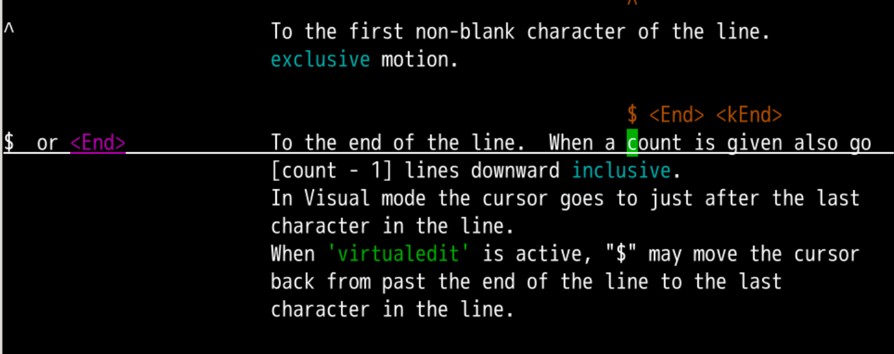
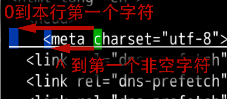
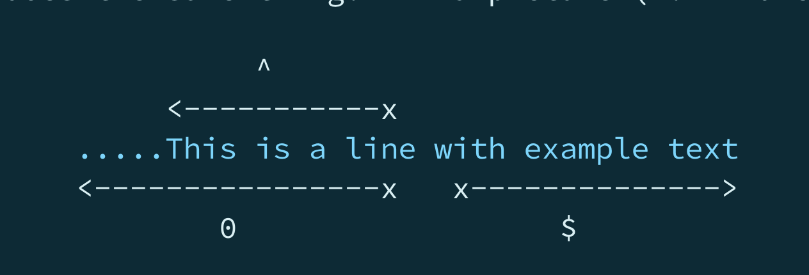
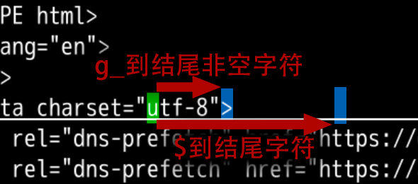

行头行尾
回忆上节课内容🤔
- 我们这次了解了
大词和小词小词就是我们常规意义的词- 被
=、"等标点分开的词
- 被
大词里面包括了=、"等标点- 只能被空格、tab、换行分割
- W、E、B 都可以有大词移动

- 但如果我想一步就跳到行头或行尾
- 这不一步登天么？
- 可能么🤔
查阅文档📕
- 还是从
:h w，开始查找起 - 还是在
motion里面查找 - 应该和 W 都属于左右移动的部分
- 找到这样两个命令

行首和行尾

- ^，也就是 shift+6
- 作用是移动到行首
- 或者说移动到本行第一个非空字符
- $，也就是shift + 4
- 作用是移动到本行行尾
^、$也分别对应正则表达式中的开头和结尾
深入细节
- 如果本行开头第一个字符是空格
- 那^无法到第一个字符啊？
- 如果我就想去第一个字符
- 无论他是空格还是tab
- 应该怎么办呢？
- 这个命令应该离
^不远 - 应该也在
motion的 左右移动部分 - 找到了
0

行头区别
- ^ 是到本行第一个非空字符
- 0 是到本行第一个字符，不管是不是空格

- 那结尾如果有空格会如何呢？
结尾细节
- 相关命令肯定也在左右移动这部分
- 找到
g_

- g_ 是到本行最后一个非空字符
- 两个按键要依次按下
- $ 跳到本行最后一个字符，即使他是空格
总结
- 我们这次学会了直接跳到开头和结尾
- 最重要的就是
^、$- ^ 到开头
- $ 到结尾
- 还有什么好玩的吗？🤔
- 下次再说 👋